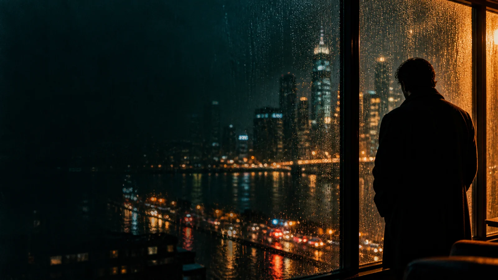

YOUR WORLD · YOUR PACE
A LITTLE LIGHT. A WORLD OF YOUR OWN.
在纷繁之中，遇见心之所向。
01 / 给自己
不必赶赴所有热闹。此刻，只听见自己的呼吸。
02 / 心有所往
那些被目光停留过的瞬间，终会长成生活的纹理。
03 / 一隅之间
在万千声音之间，仍能听见心里的声音。
04 / 心有归处
拾起喜欢，安放日常。你的一隅，自有光。
拾隅